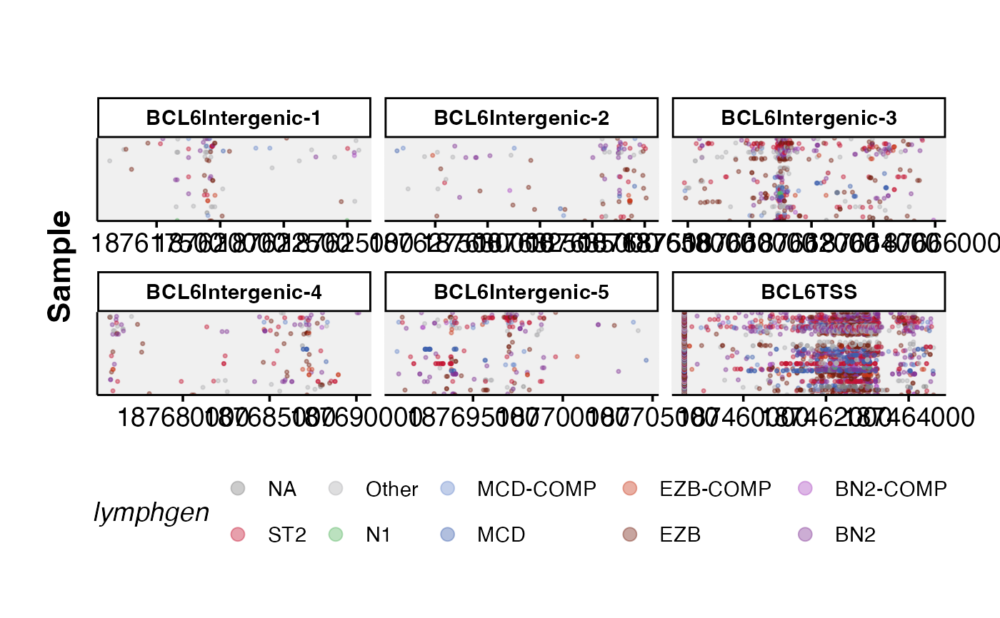

ASHM Multi-panel Rainbow Plot
ashm_multi_rainbow_plot.RdGenerates a colourful multi-panel overview of hypermutation in regions of interest across many samples.
Usage
ashm_multi_rainbow_plot(
regions_bed,
these_samples_metadata,
this_seq_type = "genome",
custom_colours,
classification_column = "lymphgen",
maf_data,
projection = "grch37",
verbose = FALSE
)Arguments
- regions_bed
Bed file with chromosome coordinates, should contain columns chr, start, end, name (with these exact names). Not required if selecting from many common regions; bonus regions also exist in grch37.
- these_samples_metadata
A metadata file already subsetted and arranged on the order you want the samples vertically displayed.
- this_seq_type
the seqtype you want results back for if `maf_data` is not provided.
- custom_colours
Provide named vector (or named list of vectors) containing custom annotation colours if you do not want to use standardized pallette.
- classification_column
Optional. Override default column for assigning the labels used for colouring in the figure.
- maf_data
An already loaded maf. If not provided, this function will call `get_ssm_by_region`, using the regions supplied into `regions_bed`. Ensure your maf matches the genome projection.
- projection
Provide genome build; default is grch37. Bonus regions are only available in grch37.
- verbose
Set to FALSE to prevent printing the full regions bed file to the console. Default is TRUE.
Details
The input for this function is a bed-file with the following columns; chr, start, end, name. Note that for this function to work, the column names must be exactly this. The user also needs to specify a vector of names (`regions_to_display`) to further control what regions are to be displayed on the returned plot. It is also possible to exclude specific classifications from the metadata file. This is achieved with `exclude_classifications`. In addition the user can also use the `metadata` parameter to use an already subset and arranged metadata table. This function will try to obtain mutations internally if `maf_data` is not given. For more info, refer to the parameter descriptions of this function.
Examples
suppressMessages(library(GAMBLR.open))
#get lymphgen colours
lymphgen_colours = GAMBLR.helpers::get_gambl_colours("lymphgen")
metadata = suppressMessages(GAMBLR.open::get_gambl_metadata()) %>%
dplyr::filter(pathology=="DLBCL",
seq_type=="genome") %>%
check_and_clean_metadata(.,duplicate_action="keep_first") %>%
dplyr::arrange(lymphgen)
#> Loading required package: dplyr
#>
#> Attaching package: ‘dplyr’
#> The following objects are masked from ‘package:stats’:
#>
#> filter, lag
#> The following objects are masked from ‘package:base’:
#>
#> intersect, setdiff, setequal, union
#> Duplicate rows (keeping first occurrence) for 'sample_id' and 'seq_type' have been dropped.
regions_bed = GAMBLR.utils::create_bed_data(grch37_ashm_regions,
fix_names = "concat",
concat_cols = c("gene","region"))
regions_bed = dplyr::filter(regions_bed,grepl("BCL6",name))
ashm_multi_rainbow_plot(regions_bed,
metadata,
custom_colours = lymphgen_colours,
verbose = TRUE)
#> [1] "ashm_multi_rainbow_plot"
#> [1] "regions_bed provided"
#> genomic_data Object
#> Genome Build: grch37
#> Showing first 10 rows:
#> chrom start end name region regulatory_comment
#> 1 3 187458526 187464632 BCL6TSS TSS <NA>
#> 2 3 187615533 187625659 BCL6Intergenic-1 Intergenic-1 <NA>
#> 3 3 187625659 187638101 BCL6Intergenic-2 Intergenic-2 <NA>
#> 4 3 187657518 187665996 BCL6Intergenic-3 Intergenic-3 <NA>
#> 5 3 187675741 187690717 BCL6Intergenic-4 Intergenic-4 <NA>
#> 6 3 187690717 187705000 BCL6Intergenic-5 Intergenic-5 <NA>
#> [1] "get_ssm_by_regions"
#> Using the bundled SSM calls (.maf) calls in GAMBLR.data...
#> Using the bundled SSM calls (.maf) calls in GAMBLR.data...
#> Running in default mode of any...
#> genomic_data Object
#> Genome Build: grch37
#> Showing first 10 rows:
#> start sample_id region_name
#> 1 187620119 OCI-Ly10 BCL6Intergenic-1
#> 2 187622610 SU-DHL-4 BCL6Intergenic-1
#> 3 187615657 FL1003T2 BCL6Intergenic-1
#> 4 187616207 SP116648 BCL6Intergenic-1
#> 5 187616296 SP116659 BCL6Intergenic-1
#> 6 187616515 96-31596T BCL6Intergenic-1
#> # A tibble: 6 × 8
#> COO_consensus DHITsig_consensus EBV_status_inf Tumor_Sample_Barcode age_group
#> <chr> <chr> <chr> <chr> <chr>
#> 1 UNCLASS DHITsigNeg NA 01-14774_tumorB Other
#> 2 ABC DHITsig-IND NA 01-23117_tumorB Other
#> 3 ABC DHITsigNeg NA 04-14093_tumorB Other
#> 4 UNCLASS DHITsigNeg NA 04-24061_tumorB Other
#> 5 UNCLASS DHITsigPos NA 05-22052 Other
#> 6 UNCLASS DHITsigPos NA 05-22052T Other
#> # ℹ 3 more variables: bam_available <lgl>, cohort <chr>, compression <chr>
#> Joining with `by = join_by(sample_id)`
#> Joining with `by = join_by(start)`
#> Joining with `by = join_by(sample_id)`
#> genomic_data Object
#> Genome Build:
#> Showing first 10 rows:
#> start sample_id region_name COO_consensus DHITsig_consensus
#> 1 187620119 OCI-Ly10 BCL6Intergenic-1 ABC DHITsigNeg
#> 2 187622610 SU-DHL-4 BCL6Intergenic-1 GCB DHITsigPos
#> 3 187615657 FL1003T2 BCL6Intergenic-1 GCB DHITsigPos
#> 4 187616207 SP116648 BCL6Intergenic-1 <NA> NA
#> 5 187616296 SP116659 BCL6Intergenic-1 <NA> NA
#> 6 187616515 96-31596T BCL6Intergenic-1 UNCLASS DHITsigNeg
#> EBV_status_inf Tumor_Sample_Barcode age_group bam_available
#> 1 EBV-negative OCI-Ly10 Other TRUE
#> 2 EBV-negative SU-DHL-4 Other TRUE
#> 3 <NA> FL1003T2 Other TRUE
#> 4 <NA> SP116648 Other TRUE
#> 5 <NA> SP116659 Other TRUE
#> 6 <NA> 96-31596T Other TRUE
#> cohort
#> 1 DLBCL_cell_lines
#> 2 DLBCL_cell_lines
#> 3 FL_Kridel
#> 4 DLBCL_ICGC
#> 5 DLBCL_ICGC
#> 6 DLBCL_GenomeCanada
#> [1] "plotting"
#> [1] "done"

#build plot
if (FALSE) { # \dontrun{
ashm_multi_rainbow_plot(regions_to_display = c("BCL2-TSS",
"MYC-TSS",
"SGK1-TSS",
"IGL"),
custom_colours = lymphgen_colours,
this_seq_type = "genome")
} # }